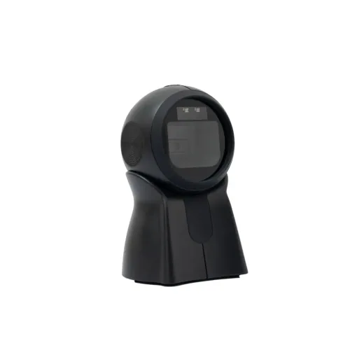
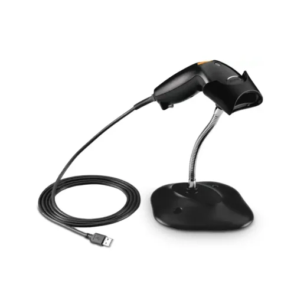
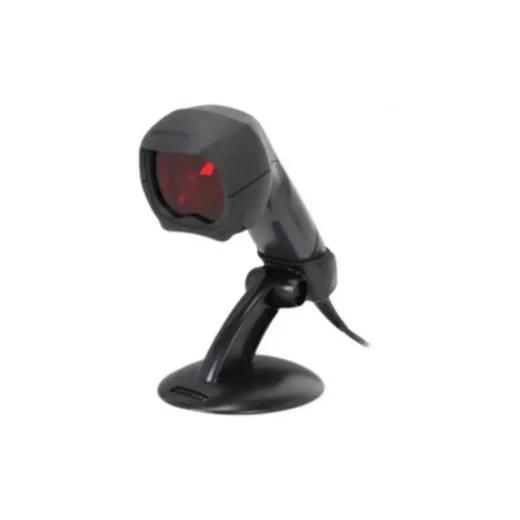
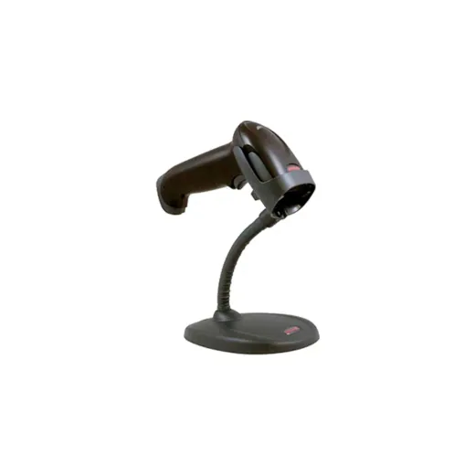
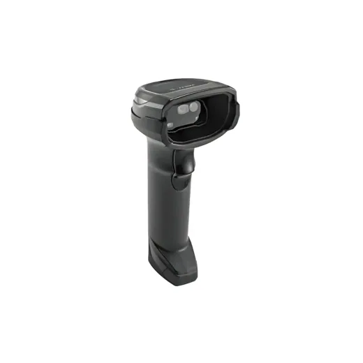
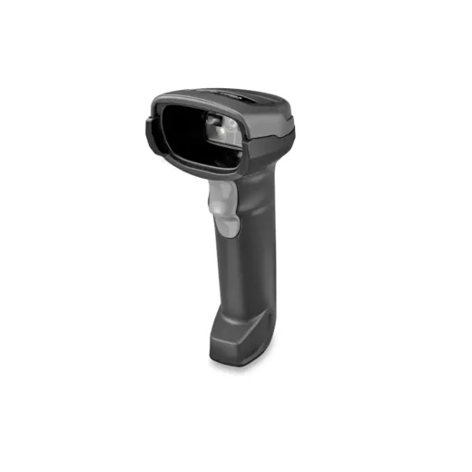
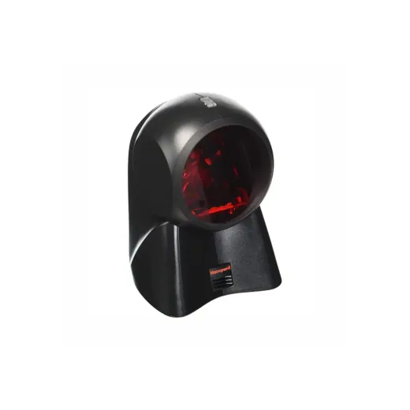
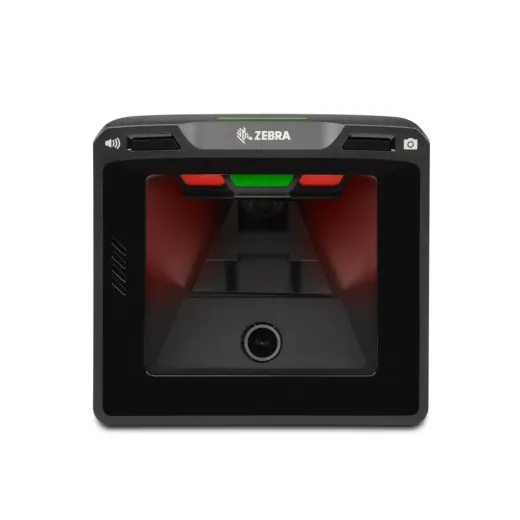
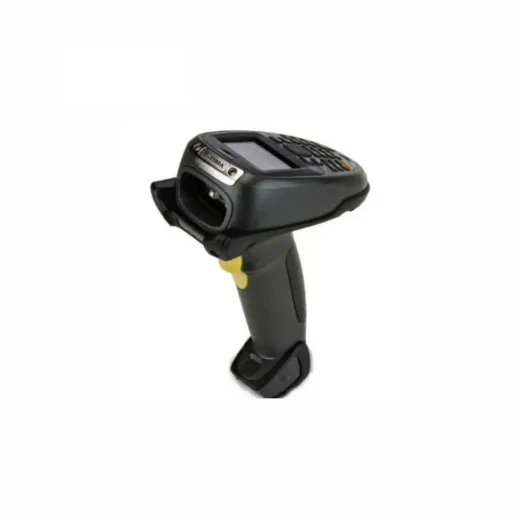

Inicio › Otros de tecnología y hogar

Escaner · Modelo V719N
Escaner de Codigo de Barra USB 2D Vorttek V719N
L 2,395
En Sycom
Precio en cada tienda
| Tienda | Precio | Antes | Disponibilidad | |
|---|---|---|---|---|
| Sycom | L 2,395 | — | Disponible | Ver en tienda › |
Precios referenciales tomados de cada tienda el 14 de noviembre de 2026. El precio válido es el que muestra la tienda al comprar.
Otros otros de tecnología y hogar Escaner

Escaner de Codigo de Barra Zebra USB KIT W/SCAN LS1203-7AZU0100SRL 2,300En Sycom
Escaner de Codigos de Barra Fusion MS3780 UsadoL 2,875En Sycom
Escaner USB Honeywell 1250G HSM-1250G2USBL 2,995En Sycom
Escaner de Codigo de Barra Zebra USB DS8108-SR00007ZZWWL 3,600.01En Sycom
Escaner de Codigo de Barra Inalambrico Zebra DS-2278-SR BLK DS2278-SR7U2100PRWL 7,000En Sycom
Escaner de Codigo de Barra Honeywell MS7120L 8,400En Sycom
Escaner de Codigos de Barra Vertical Zebra SP7201-V Negro · De Mostrador USB Omnidireccional 1D/2D N/DL 9,200En Sycom
Escaner de Codigo de Barra SYMBOL MT2000 MT2070 STR-2000-C1 Open BoxL 13,800En Sycom